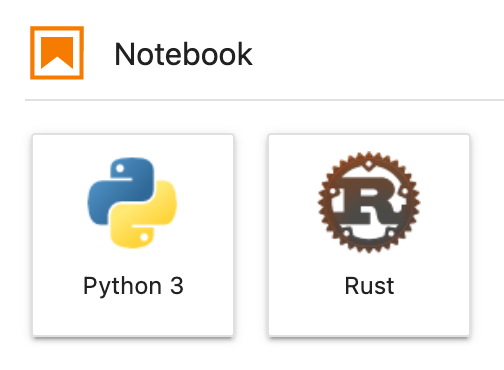

最近重新安裝了 macOS Big Sur，想試試 Jupyter Notebook 的 Rust 環境，再加上這幾天放假比較有時間，就把安裝的過程記錄下來。
安裝 Miniconda
過去一直覺得 Anaconda 有點肥大，所以這次決定先從安裝比較精簡的 miniconda 開始:
$ brew install --cask miniconda
新增 conda-forge channel 以便安裝需要的套件如 jupyterlab:
$ conda config --add channels conda-forge
$ conda config --set channel_priority strict
然後需要初始化 conda 的 base 環境，一般都是跑 conda init，但它會加一段不是很通用的設定到我個人的 .zshrc，我不是很喜歡這種做法，所以就先只套用在目前的 shell 裡:
$ eval `conda shell.zsh hook`
創建新的 conda 環境
創建一個新的環境叫 rust-notebook:
(base) $ conda create -n rust-notebook python=3
(base) $ conda activate rust-notebook
安裝 JupyterLab
在新的環境指定安裝 jupyterlab 版本 2.2.9，因為最新的 3.0 似乎與最新的 jupyterlab-plotly 不相容:
(rust-notebook) $ conda install jupyterlab=2.2.9
然後安裝 jupyterlab-plotly:
(rust-notebook) $ jupyter labextension install jupyterlab-plotly
安裝 evcxr_jupyter
假設 Rust 已經安裝完成，直接用 Cargo 安裝 Rust 的 Jupyter kernel:
$ cargo install evcxr_jupyter
$ evcxr_jupyter --install
啟動 JupyterLab:
(rust-notebook) $ jupyter lab
如果可以看到下列 Rust 圖示應該就是成功了:

範例執行結果
試一下:
println!("Hello, Jupyter!");
Hello, Jupyter!
來畫個圖:
:dep plotters = { git = "https://github.com/38/plotters", default_features = false, features = ["evcxr", "line_series"] }
extern crate plotters;
use plotters::prelude::*;
use plotters::series::*;
let figure = evcxr_figure((640, 480), |root| {
root.fill(&WHITE);
let mut chart = ChartBuilder::on(&root)
.caption("y=x^2", ("Arial", 50).into_font())
.margin(5)
.x_label_area_size(30)
.y_label_area_size(30)
.build_ranged(-1f32..1f32, -0.1f32..1f32)?;
chart.configure_mesh().draw()?;
chart.draw_series(LineSeries::new(
(-50..=50).map(|x| x as f32 / 50.0).map(|x| (x, x * x)),
&RED,
)).unwrap()
.label("y = x^2")
.legend(|(x,y)| PathElement::new(vec![(x,y), (x + 20,y)], &RED));
chart.configure_series_labels()
.background_style(&WHITE.mix(0.8))
.border_style(&BLACK)
.draw()?;
Ok(())
});
figure